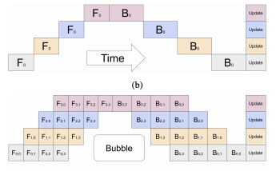

Pipeline parallelism¶
I focus on pipeline parallelism as described in Huang et al 2019, which introduces GPipe.
Assume that a neural network \(f(x)\) consists of L layers, i.e., that \(f(x) = f_L(\dots f_2(f_1(x)) \dots)\).
We can rewrite \(f(x)\) as \(g_K(\dots g_2(g_1(x)) \dots)\) where each \(g\) is a composition of \(f\) functions. For example, suppose \(L = 6\) and \(K = 3\), we can write \(f(x)\) as \(g_3(g_2(g_1(x)))\) where \(g_1(x) = f_3(f_2(f_1(x)))\), \(g_2(x) = f_4(x)\), \(g_3(x) = f_6(f_5(x))\).
The user inputs the number of partitions K. The exact form of the partitioning is determined by the algorithm depending on the computational cost of each layer \(f_i\). In particular, the algorithm tries to minimize the variance of the computation happening in each partition, i.e., make each partition have similar computational cost.
The weights associated with the \(g_i\) are placed on the \(i\)-th accelerator. In that way, the neural network is divided across \(K\) accelerators.
We can now “pipeline” a minibatch through the model by sending the minibatch to the first accelerator and then passing along the outputs to the 2nd accelerator and so on. But this means that a lot of accelerators are sitting idle while waiting for their inputs (each accelerator only works with a single \(g_i\)). So in the forward pass the algorithm splits a minibatch into micro-batches of user defined size \(M\). Each accelerator operates on micro-batches in sequence, but as soon as it’s done with one micro-batch it passes the results to the next accelerator and moves on to processing its next micro-batch as depicted in this graph where the top is pipeline parallelism without micro-batches and the bottom is with micro-batches:

The update for a batch isn’t applied until the gradients are received from each micro-batch.
The authors contrast this with T5-style model parallelism: “SPMD allows splitting every computation across multiple devices, allowing the user to scale the size of individual matrix multiplications (and thus, the model parameters of individual layers) linearly with the number of accelerators. However, this also introduces high communication overhead between the accelerators due to an abundance of AllReduce-like operations used to combine the outputs of each parallelized matrix multiplication. This limits the applicability of the approach to scenarios where accelerators are connected with high speed interconnects.”
Some of the limitations include:
“a single layer fits within the memory requirements of a single accelerator”
“Additionally, micro-batch splitting requires complicated strategies to support layers that require computations across the batch (for example, BatchNorm uses statistics over the micro-batch during training, but accumulates mini-batch statistics for evaluation).”